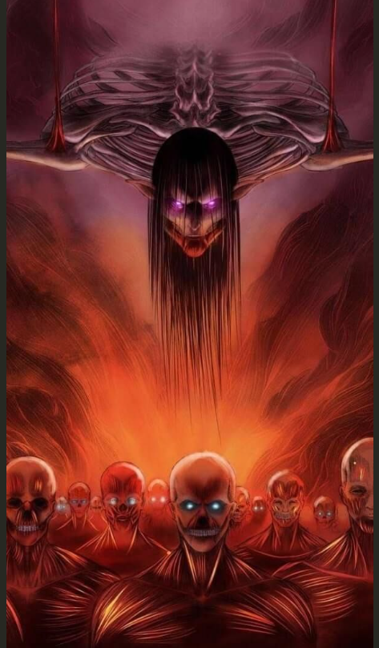

Attack on Titan
Humanity is on the brink of extinction, forced to live within massive walled cities to protect themselves from man-eating giants known as Titans. Eren Yeager, after witnessing the destruction of his home, joins the military to fight back.
Death Note

A highly intelligent student, Light Yagami, stumbles upon a mysterious notebook called the Death Note, which grants him the power to kill anyone by writing their name in it. Determined to rid the world of criminals, Light takes on the alias Kira and begins his crusade.
One Piece

Monkey D. Luffy, a young pirate with the ability to stretch his body like rubber after eating a Devil Fruit, dreams of finding the legendary treasure known as One Piece and becoming the Pirate King.